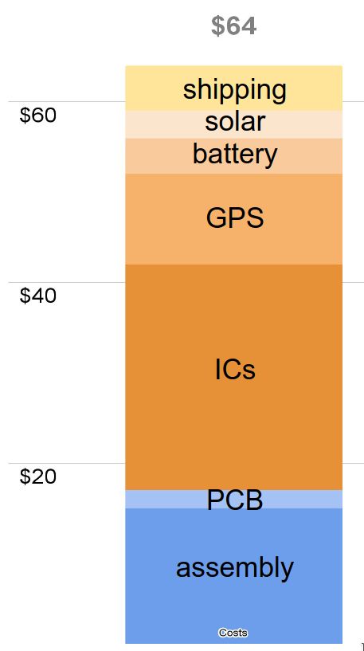

Manufacturing tags and costs
To manufacture the tags in small qty (10-100) the best option is to use PCB prototyping services that manufacture the FlexPCBs and assemble surface mount components. The result is that all the tiny surface mount components are machine placed and soldered. The remaining assembly is to solder large components to the tag: solar cell, battery, and antenna.
The next step is to protect the tag from moisture with conformal coating, typically by spraying on or dipping the tag into an acrylic or epoxy compound. In addition, a prepared fiberglass veil should be placed over the electronic components to stiffen the tag and smoothen over the sharp edges of the components.
Finally the tag needs to be tested, which involves loading test firmware that can exercise all the functions. For a proper test the tag needs to be cycled through various environments such as different GPS signal quality as well as various sunlight exposures and the tag's performance needs to be monitored over several days. Properly functioning tags can then be programmed with the final firmware and configured as desired.

Costs
The cost to manufacture the tags is shockingly low compared to commercial GPS tags that typically have a price tag above $1000. This is because the manual assembly and testing tasks are performed by the user and the software is provided for free, i.e., there is no charge for the non-recurring engineering costs. The bottom line is that even in small quantities the tags should cost less than $70, possibly as low as $30-$40.
The biggest caveat about the price is the manufacturing risk. If a batch of tags ends up not working due to an error it is unlikely that one can recover much of the costs. The PCB manufacturer may reimburse some of the assembly costs but that still leaves the cost of all the components.